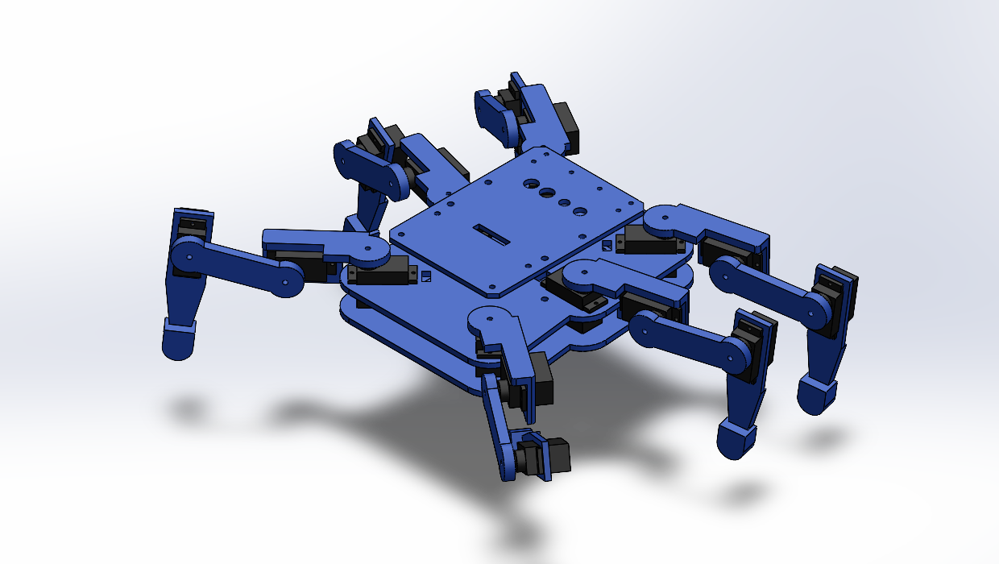
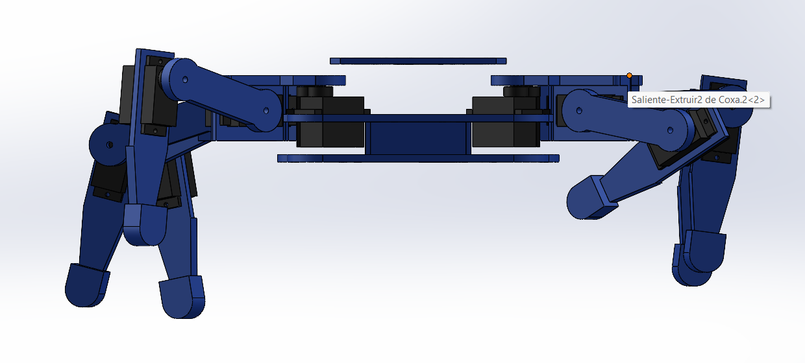
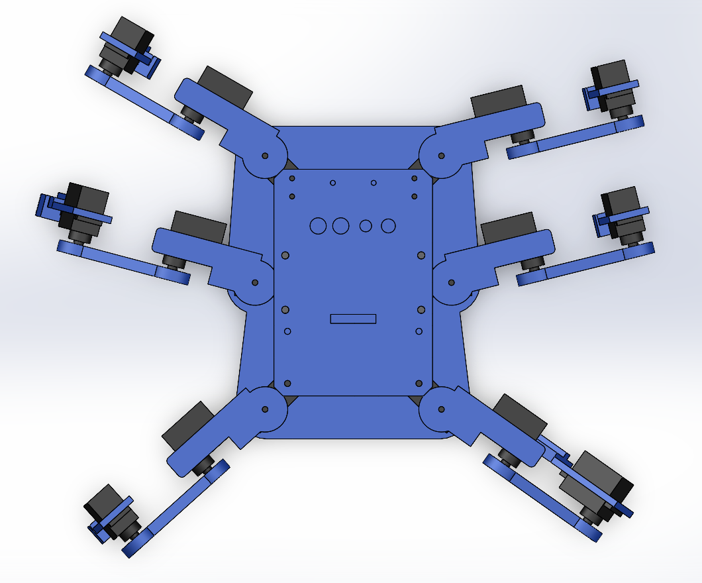
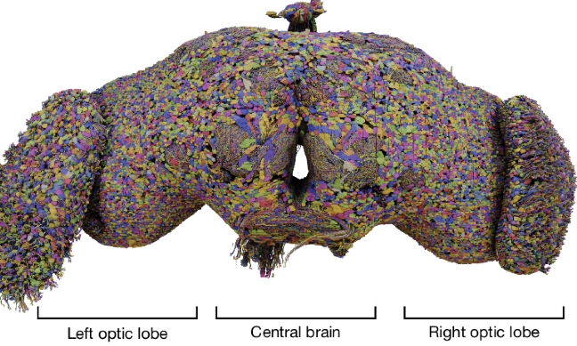
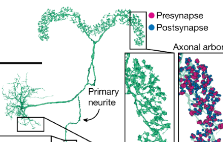
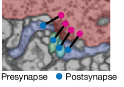
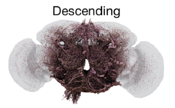

Hexápodo
Mosca
Un robot de 6 patas inspirado en la mosca de la fruta.
Equipo La mosca encapsulada · CECyTEQ plantel Corregidora · Grupo 3TMEC-BM
Servos MG90S
Cada pata tiene 3 articulaciones, como la pata de un insecto. En total son 18 motores pequeños y ligeros, con engranes de metal.
Coxa, fémur y tibia
La coxa (cadera, 25 mm) mueve la pata adelante y atrás, el fémur (45 mm) la sube y la baja, y la tibia (65 mm) dobla la punta. El pie es de TPU flexible para no resbalar en la madera.
El cerebro: ESP32
Calcula el ángulo de cada motor 50 veces por segundo y crea su propia red WiFi. Le manda las órdenes a 2 placas PCA9685, una por cada lado del robot, con solo 2 cables.
La energía
Una pila LiPo de 2500 mAh, con fusible e interruptor. Dos reguladores XL4015 la bajan a 5.8 V para los servos y un LM7805 alimenta solo a la ESP32, para que no se reinicie cuando los motores jalan corriente.
Un robot con patas, sin ruedas
Recorrer una pista de madera de 2 a 3 metros, con zonas rugosas, en menos de 3 minutos.
Diseñado en SolidWorks
Todo el cuerpo lo diseñamos nosotros y lo imprimimos en 3D en PLA+, que es rígido y aguanta golpes. Las placas miden 112 × 138 mm.



Marcha trípode
Las 6 patas se dividen en dos triángulos. Mientras uno empuja en el piso, el otro avanza por el aire, y luego cambian. Siempre hay 3 patas apoyadas, así que no se cae.
- Cinemática inversa: decide dónde poner cada pie y calcula los ángulos con la ley de cosenos.
- Control desde el celular por WiFi, con una pantalla tipo control de Xbox.
- 4 velocidades y una marcha lenta de onda, una pata a la vez.
- Seguridad: si pierde la señal 0.6 s, se frena solo.
Lo que falló y cómo lo resolvimos
- La Raspberry Pi estaba agotada en México → cambiamos a ESP32.
- La compu no encontraba la ESP32 → puerto y driver correctos.
- El pie subía de golpe → lo limitamos a 60 mm por segundo.
- Solo se movía un lado → pila con clemas y un regulador por lado.
- La ESP32 se reiniciaba → encendemos las patas una por una.
- Servos descentrados → tabla de calibración desde el celular.
Del dibujo al robot caminando
Un cerebro de mosca
La versión final usará una Raspberry Pi con cámara (ojos), 2 sensores de distancia VL53L0X (tacto) y antenas infrarrojas (olfato). Un cerebro inspirado en el conectoma de la mosca de la fruta decidirá solo cómo llegar a la meta. En el simulador ya llegó en las 8 pruebas.
Así queda armado
Todas las piezas vuelven a su lugar: 6 patas, 18 servos, 2 placas de control, la ESP32 y la pila, en un cuerpo de 24 × 23 cm.
Cómo decide hacia dónde caminar
Copiamos un pedacito del cerebro de la mosca de la fruta: las mismas clases de neuronas que usa ella para encontrar comida y esquivar cosas. Son 4 tipos de neuronas de la mosca (PFL, DNa, DNp y MDN), un reloj que marca el paso y 19 números que el robot aprendió solo. Toca cada círculo para ver qué hace.
El estudio de verdad: el conectoma de la mosca
Los científicos del proyecto FlyWire cortaron el cerebro de una mosca en miles de rebanadas finísimas, las fotografiaron con un microscopio electrónico y reconstruyeron cada neurona y cada conexión. A ese mapa completo se le llama conectoma. Se publicó en la revista Nature en octubre de 2024: 139,255 neuronas y más de 50 millones de conexiones.




Imágenes: Dorkenwald y colaboradores, «Neuronal wiring diagram of an adult brain», Nature 634 (2024), proyecto FlyWire. Licencia CC BY 4.0; las imágenes están recortadas. Ver el estudio.
El mapa de neuronas
Pruébalo
Vista desde arriba
Qué está pensando
Cómo aprendió
Nadie le programó los números a mano. En el simulador 3D corrieron 36 cerebros a la vez en la pista del reglamento; los 7 mejores se mezclaban y se cambiaban un poquito al azar para formar la siguiente generación, como la evolución. Después de 143 generaciones, con ruido y sensores con fallas a propósito, quedó el cerebro v4: llega a la meta en el 100 % de las carreras de las 8 pruebas.